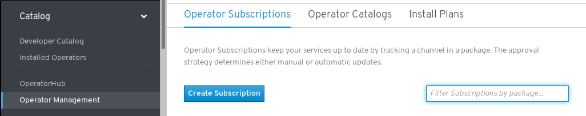

Hyper Converged Operator
HCO known as Hyper Converged Operator
Prerequisites:
This Blog assumes that the reader is aware of the concept of Operators and how it works in K8’s environment. Before proceeding further, feel free to take a look at this concept using CoreOS BlogPost
What it does?
The goal of the hyperconverged-cluster-operator (HCO) is to provide a single entrypoint for multiple operators - kubevirt, cdi, networking, etc… - where users can deploy and configure them in a single object. This operator is sometimes referred to as a “meta operator” or an “operator for operators”. Most importantly, this operator doesn’t replace or interfere with OLM. It only creates operator CRs, which is the user’s prerogative.
How does it work?
In this blog post, I’d like to focus on the first method(i.e by deploying a HCO using a CustomResourceDefinition method)which might seem like the most immediate benefit of this feature. Let’s get started!
Environment description
We can use HCO both on minikube and also on OpenShift 4. We will be using OpenShift 4 for HCO in this post.
Note: All the commands for installing HCO on minikube will remain the same as documented below, please follow the link Install_HCO_minikube install minikube by adjusting the memory to your requirement(atleast 4GiB of RAM is recommended).
Deploying HCO on OpenShift 4 Cluster.
Installation steps for OpenShift 4 including video tutorial can be found here
Upon successful installation of OpenShift, we will have a cluster consisting of 3 masters and 3 workers which can be used for HCO integration
$oc version
Client Version: version.Info{Major:"4", Minor:"1+", GitVersion:"v4.1.0", GitCommit:"2793c3316", GitTreeState:"", BuildDate:"2019-04-23T07:46:06Z", GoVersion:"", Compiler:"", Platform:""}
Server Version: version.Info{Major:"1", Minor:"12+", GitVersion:"v1.12.4+0ba401e", GitCommit:"0ba401e", GitTreeState:"clean", BuildDate:"2019-03-31T22:28:12Z", GoVersion:"go1.10.8", Compiler:"gc", Platform:"linux/amd64"}
Check the nodes:
$oc get nodes
NAME STATUS ROLES AGE VERSION
ip-10-0-133-213.us-east-2.compute.internal Ready worker 12m v1.13.4+da48e8391
ip-10-0-138-120.us-east-2.compute.internal Ready master 18m v1.13.4+da48e8391
ip-10-0-146-51.us-east-2.compute.internal Ready master 18m v1.13.4+da48e8391
ip-10-0-150-215.us-east-2.compute.internal Ready worker 12m v1.13.4+da48e8391
ip-10-0-160-201.us-east-2.compute.internal Ready master 17m v1.13.4+da48e8391
ip-10-0-168-28.us-east-2.compute.internal Ready worker 12m v1.13.4+da48e8391
Clone the HCO repo:
git clone https://github.com/kubevirt/hyperconverged-cluster-operator.git
This gives all the necessary go packages and yaml manifests for the next steps.
Let’s create a NameSpace for the HCO deployment
oc create new-project kubevirt-hyperconverged
Now switch to the kubevirt-hyperconverged NameSpace
oc project kubevirt-hyperconverged
Now launch all the CRD’s
oc create -f deploy/converged/crds/hco.crd.yaml
oc create -f deploy/converged/crds/kubevirt.crd.yaml
oc create -f deploy/converged/crds/cdi.crd.yaml
oc create -f deploy/converged/crds/cna.crd.yaml
Let’s see the yaml file for HCO Custom Resource Definition
---
apiVersion: apiextensions.k8s.io/v1beta1
kind: CustomResourceDefinition
metadata:
name: hyperconvergeds.hco.kubevirt.io
spec:
additionalPrinterColumns:
- JSONPath: .metadata.creationTimestamp
name: Age
type: date
- JSONPath: .status.phase
name: Phase
type: string
group: hco.kubevirt.io
names:
kind: HyperConverged
plural: hyperconvergeds
shortNames:
- hco
- hcos
singular: hyperconverged
scope: Namespaced
subresources:
status: {}
version: v1alpha1
versions:
- name: v1alpha1
served: true
storage: true
Let’s create ClusterRoleBindings, ClusterRole, ServerAccounts and Deployments for the operator
$ oc create -f deploy/converged
And after verifying all the above resources we can now finally deploy our HCO custom resource
$ oc create -f deploy/converged/crds/hco.cr.yaml
We can take a look at the YAML definition of the CustomResource of HCO:
Let’s create ClusterRoleBindings, ClusterRole, ServerAccounts and Deployments for the operator
$ oc create -f deploy/converged
And after verifying all the above resources we can now finally deploy our HCO custom resource
$ oc create -f deploy/converged/crds/hco.cr.yaml
We can take a look at the YAML definition of the CustomResource of HCO:
---
apiVersion: hco.kubevirt.io/v1alpha1
kind: HyperConverged
metadata:
name: hyperconverged-cluster
After successfully executing the above commands,we should be now be having a virt-controller pod, HCO pod, and a network-addon pod functional and can be viewed as below.
Let’s see the deployed pods:
$oc get pods
NAME READY STATUS RESTARTS AGE
cdi-apiserver-769fcc7bdf-rv8zt 1/1 Running 0 5m2s
cdi-deployment-8b64c5585-g7zfk 1/1 Running 0 5m2s
cdi-operator-c77447cc7-58ld2 1/1 Running 0 11m
cdi-uploadproxy-8dcdcbff-rddl6 1/1 Running 0 5m2s
cluster-network-addons-operator-85cd468ff5-xjgds 1/1 Running 0 11m
hyperconverged-cluster-operator-75dd9c96f9-pqvdk 1/1 Running 0 11m
virt-api-7f5bfb4c58-bkbhq 1/1 Running 0 4m59s
virt-api-7f5bfb4c58-kkvwc 1/1 Running 1 4m59s
virt-controller-6ccbfb7d5b-m7ljf 1/1 Running 0 3m49s
virt-controller-6ccbfb7d5b-mbvlv 1/1 Running 0 3m49s
virt-handler-hqz9d 1/1 Running 0 3m49s
virt-operator-667b6c845d-jfnsr 1/1 Running 0 11m
Also the below deployments:
$oc get deployments
NAME READY UP-TO-DATE AVAILABLE AGE
cdi-apiserver 1/1 1 1 10m
cdi-deployment 1/1 1 1 10m
cdi-operator 1/1 1 1 16m
cdi-uploadproxy 1/1 1 1 10m
cluster-network-addons-operator 1/1 1 1 16m
hyperconverged-cluster-operator 1/1 1 1 16m
virt-api 2/2 2 2 9m58s
virt-controller 2/2 2 2 8m49s
virt-operator 1/1 1 1 16m
Note
Here, Once we applied the Custom Resource the operator took care of deploying the actual KubeVirt pods (virt-api, virt-controller and virt-handler), CDI pods(cdi-upload-proxy, cdi-apiserver, cdi-deployment, cdi-operator) and Network add-on pods ( cluster-network-addons-operator).We will need to wait until all of the resources are up and running. This can be done using the command above or by using the command above with the -wflag.
After the HCO is up and running on the cluster, we should be able to see the info of CRD’s
$oc get crds | grep kubevirt
cdiconfigs.cdi.kubevirt.io 2019-05-07T20:22:17Z
cdis.cdi.kubevirt.io 2019-05-07T20:20:58Z
datavolumes.cdi.kubevirt.io 2019-05-07T20:22:17Z
hyperconvergeds.hco.kubevirt.io 2019-05-07T20:20:58Z
kubevirtcommontemplatesbundles.kubevirt.io 2019-05-07T20:20:58Z
kubevirtnodelabellerbundles.kubevirt.io 2019-05-07T20:20:58Z
kubevirts.kubevirt.io 2019-05-07T20:20:58Z
kubevirttemplatevalidators.kubevirt.io 2019-05-07T20:20:58Z
kwebuis.kubevirt.io 2019-05-07T20:20:58Z
networkaddonsconfigs.networkaddonsoperator.network.kubevirt.io 2019-05-07T20:20:58Z
nodemaintenances.kubevirt.io 2019-05-07T20:20:58Z
virtualmachineinstancemigrations.kubevirt.io 2019-05-07T20:23:02Z
virtualmachineinstancepresets.kubevirt.io 2019-05-07T20:23:01Z
virtualmachineinstancereplicasets.kubevirt.io 2019-05-07T20:23:02Z
virtualmachineinstances.kubevirt.io 2019-05-07T20:23:01Z
virtualmachines.kubevirt.io 2019-05-07T20:23:02Z
Note
In OpenShift we can use both kubectl and oc interchangeably to interact with the cluster objects once HCO is up and running.
You can also read more about CDI, CNA, ssp-operator, web-ui and KubeVirt:
HCO using the OLM method
Note
The complete architecture of OLM and its components that connect together can be understood using the link OLM_architecture
Replace
Next, build and publish the converged HCO operator-registry image.
cd deploy/converged
export HCO_DOCKER_ORG=<docker_org>
docker build --no-cache -t docker.io/$HCO_DOCKER_ORG/hco-registry:example -f Dockerfile .
docker push docker.io/$HCO_DOCKER_ORG/hco-registry:example
As an example deployment, Let’s take the value of operator-registry image as
docker.io/rthallisey/hyperconverged-cluster-operator:latest
Now, Let’s create the kubevirt-hyperconverged NS as below
oc create ns kubevirt-hyperconverged
Create the OperatorGroup
cat <<EOF | oc create -f -
apiVersion: operators.coreos.com/v1alpha2
kind: OperatorGroup
metadata:
name: hco-operatorgroup
namespace: kubevirt-hyperconverged
EOF
Create a Catalog Source backed by a grpc registry
cat <<EOF | oc create -f -
apiVersion: operators.coreos.com/v1alpha1
kind: CatalogSource
metadata:
name: hco-catalogsource
namespace: openshift-operator-lifecycle-manager
imagePullPolicy: Always
spec:
sourceType: grpc
image: docker.io/rthallisey/hco-registry:v0.1-8
displayName: KubeVirt HyperConverged
publisher: Red Hat
EOF
Please wait until the hco-catalogsource pod comes up
Next is to create a subscription, we can create a subscription from the OpenShift4 web interface as shown below:

Once subscribed, we can create a kubevirt Hyperconverged Operator from UI:

Install the HCO Operator:

Please wait until the virt-operator, cdi-operator and cluster-network-addons-operator comes up.
After they are up, its now time to launch the HCO-Custom Resource itself:

Once the HCO Operator is deployed in the kubevirt-hyperconverged NS, we can see all the pods are up and running:

We can verify the same from the CLI:
oc get pods -n kubevirt-hyperconverged
NAME READY STATUS RESTARTS AGE
cdi-apiserver-769fcc7bdf-b5v8n 1/1 Running 0 4m5s
cdi-deployment-8b64c5585-qs527 1/1 Running 0 4m4s
cdi-operator-77b8847b96-5kmb2 1/1 Running 0 4m55s
cdi-uploadproxy-8dcdcbff-xgnxf 1/1 Running 0 4m5s
cluster-network-addons-operator-584dff99b8-c5kz5 1/1 Running 0 4m55s
hco-operator-59b559bd44-lgdnm 1/1 Running 0 4m55s
kubevirt-ssp-operator-67b78446f7-l7rfv 1/1 Running 0 4m55s
kubevirt-web-ui-operator-9df6b67d9-mzf6s 1/1 Running 0 4m55s
node-maintenance-operator-6b464dc85-v6vmw 1/1 Running 0 4m55s
virt-api-7b56d7dd89-8s78r 1/1 Running 0 2m59s
virt-api-7b56d7dd89-h75t8 1/1 Running 1 2m59s
virt-controller-77c6d6d779-9qpp4 1/1 Running 0 2m32s
virt-controller-77c6d6d779-vbbxg 1/1 Running 0 2m32s
virt-handler-4bfb9 1/1 Running 0 2m32s
virt-handler-ns97x 1/1 Running 0 2m32s
virt-handler-q7wbh 1/1 Running 0 2m32s
virt-operator-87d7c98b-mh8pg 1/1 Running 0 4m55s
virt-operator-87d7c98b-p6mbd 1/1 Running 0 4m55s
We can see how OLM operator manages the HCO pods from the openshift-operator-lifecycle-manager NS:

The above method demonstrates the integration of HCO operator in OpenShift4.
So, after HCO is up and running we need to test it by deploying a small instance of a VM.To deploy an instance follow the instructions here minikube_quickstart:
Conclusion
What to expect next?
HCO achieved its goal which was to provide a single entrypoint for multiple operators - kubevirt, cdi, networking, etc.where users can deploy and configure them in a single object as seen above.
Now, we can also launch the HCO through OLM.
Note
Until we publish (and consume) the HCO and component operators through operatorhub.io, this is a means to demonstrate the HCO workflow without OLM Once we publish operators through Marketplace at OperatorHub.io, it will be available here